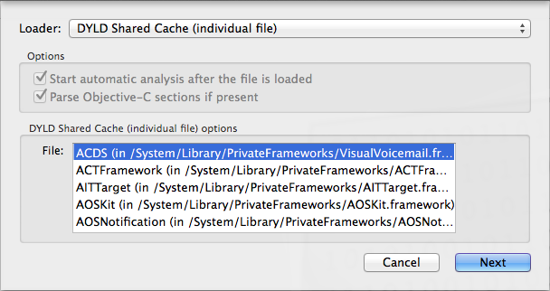

This extremely short guide is for iOS 7-9, both ARM32 and 64 bit Apple processors. The things you need to start:
Let’s start. Most of iOS system libs are sticked together in a DYLD shared cache (a big file mapped to a process address space). SSH your iOS device and
# find / | grep dyld_shared_cache
For example, in iPhone 4 with iOS 7, you can find the DYLD shared cache here
/System/Library/Caches/com.apple.dyld/dyld_shared_cache_armv7
In iPad mini 2 with iOS 9, the caches are here
/System/Library/Caches/com.apple.dyld/dyld_shared_cache_arm64
/System/Library/Caches/com.apple.dyld/dyld_shared_cache_armv7s
(the iPad mini 2 runs ARM64, so there are two caches: for 32 and 64 bit modes).
Copy the cache from iOS device to a local Mac, open it with Hopper, and choose the library to disassemble:

Enjoy :)
Commenting is not available in this blog, but you can write me a letter or message.
Prev: Debugging iOS binaries with LLDB